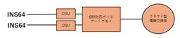
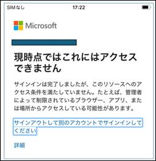
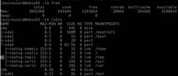
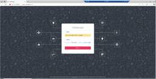
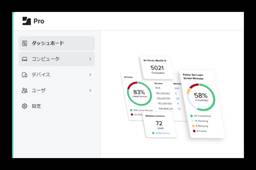
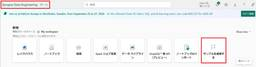

JBS Tech Blog
https://blog.jbs.co.jp/
JBS Tech Blogは、日本ビジネスシステムズ（JBS）の社員が分担して執筆を担当し、技術情報を発信しているブログです！
フィード

Power Automate：Teams内で同グループメンバーのみにメッセージを送信する 1
1
JBS Tech Blog
本記事ではMicrosoft Teamsで同グループのメンバーのみにメッセージを送信する方法をご紹介します。効率的なコミュニケーションを実現するためのステップを詳しく解説。
1日前

ユニファイドコミュニケーション採用時のボイスゲートウェイによる回線収容 1
JBS Tech Blog
ユニファイドコミュニケーション（以後UCと記載）は、現代のビジネスにおいて非常に重要な役割を果たしています。複数の通信手段を統合することで、よりスムーズで効率的なコミュニケーションを実現し、企業の生産性向上に寄与しています。 この技術により、従業員間のコラボレーションが促進され、業務の効率性が大幅に向上します。昨今では企業において電話交換機の入れ替えを行う際に、UCで検討を行うケースが増えています。 UCでは電話番号を付加することで、既存の電話交換機からの置き換えの検討をすることが可能です。システムに対し、新たに電話番号を設けることや、既存の電話交換機で使用している番号をクラウドで収容すること…
1日前

Intuneライセンスがない環境でデバイスを条件にした条件付きアクセス許可ポリシーの作成方法と有用性 1
JBS Tech Blog
企業において、私用端末(BYOD）の抑止を実現したい場合、Microsoft Intune（以下、Intune）にてデバイスベースの条件付きアクセス設定を利用する方法が考えられます。 この機能を利用する場合、当然ですが、Intuneライセンスが必要になります。 一方で、Microsoft Entra ID P1ライセンス（旧名：Azure AD Premium P1）でも、Entra上のデバイス登録機能は利用が可能です。 「Intuneライセンスは所有していないがMicrosoft Entra ID P1ライセンスはある」という環境でも、Entra上のデバイス登録機能が利用できるのであれば、デ…
1日前

【Microsoft×生成AI連載】【Power Platform】Microsoft Power AutomateでMicrosoft Copilotを使ってみた 1
JBS Tech Blog
ちょうど1年前にPower AutomateでCopilotを使ってフローをまるごと作成してみたり、アクションを追加するなどの検証を行いました。そこから1年が経ち、1年間改善があったかを確認しようと思います。本記事では1年前と同じプロンプトを再検証し、改善点を探るとともに、新たに試したさまざまなプロンプトに対してもご紹介します。
2日前
PIM対応もばっちり！Microsoft Graph PowerShellで構築するEntra IDロール棚卸術 1
JBS Tech Blog
混在しがちなEntra IDの管理者ロールを効率的に管理する方法を解説。管理者必見のPowerShellスクリプトで、ロール情報の可視化とCSV出力を実現します。
2日前

Terraformにてterraform testを試してみた 1
JBS Tech Blog
Terraformのv1.6より、Terraformモジュールやリソースのテストを実行することができる「terraform test」の機能が追加されております。 github.com 今回は本機能を試してみようと思います。 terraform testとは 前提条件 事前準備 リソース作成用のTerraform定義ファイルを作成する テストファイル(.tftest.hcl)を作成する terraform testを実行する 設定値が正しい状態で実行する 設定値が誤った状態で実行する st.tfを一部設定変更する terraform testを実行する おわりに terraform testと…
2日前
【OpManager使ってみた】第3回 OpManagerへの機器登録 1
JBS Tech Blog
監視ソフトウェア「OpManager」について、連載形式で紹介しています。 第3回となる本記事では、OpManagerへの機器登録について説明していきます。 概要 機器監視登録 Windows Serverの監視登録 Linux Serverの監視登録 死活監視の機能確認 まとめ 概要 第2回でOpManagerの初期設定が完了しました。 blog.jbs.co.jp これでOpManagerの監視機能を使用することが出来ますので、OpManagerへの機器登録手順を実際に進めていきます。 機器監視登録 Windows Serverの監視登録 OpManager画面で「設定」→「ディスカバリー…
3日前
【OpenManage Enterprise】オフラインバージョンアップデートの方法（Windows ServerでのHTTP共有編） 1
JBS Tech Blog
OpenManage Enterprise（以降OME）とは、Dell Technologiesより提供される1対多のシステム管理用/モニタリング用Webアプリケーション製品です。 OMEのソフトウェアバージョンは、新しいバージョンが出ている場合アップデートすることが可能です。 インターネット接続が可能な環境であればオンラインアップデートにて対応できますが、インターネット接続が不可の場合は、いくつか下準備をしたうえでオフラインアップデートの手順で対応が必要となります。 オフラインアップデートの手順としては、以下の3つの方法があります。 Windows ServerでのNFS共有を利用した方法 …
3日前

Azure Linux VM に cloud-init を使用して SWAP ファイルを作成する際に失敗する問題と対処法 1
JBS Tech Blog
Azure 上の RHER に cloud-init を使用して SWAP ファイルが作成できない問題が発生し、原因と対処法についてまとめました。
4日前
【Microsoft×生成AI連載】【Excel】ExcelでのCopilot活用術：スマートなコンテキスト認識 1
JBS Tech Blog
本記事では「Microsoft Excel」(以下、Excel)で利用できるCopilotの機能について紹介します。
4日前

【OpManager使ってみた】第2回 OpManagerの初期設定 1
JBS Tech Blog
（2025年7月17日追記）初出時のパフォーマンスチューニングについての記載を削除しました。 本記事では、監視ソフトウェア「OpManager」の紹介をしていきます。 第2回は、OpManagerのインストール後の初期設定ついて、説明していきます。 概要 OpManagerの初期設定 OpManagerの起動 ログインパスワード変更 AD認証設定 認証情報設定 まとめ 概要 OpMnagerをインストール後、監視登録および機能を使用するために必要な設定をしていく必要があります。 本記事では、初期設定の手順について紹介していきます。 OpManagerの初期設定 OpManagerの起動 OpM…
5日前

JamfとIntuneにおけるグループ作成方法の違い 1
JBS Tech Blog
Jamf Pro、Intuneはどちらもデバイス管理およびエンドポイント管理を行うための成熟したツールです。 しかし、Microsoft IntuneがWindows・iOS・Androidといった複数のプラットフォームであるのに対し、Jamf ProはmacOS・iOS・iPadOSといったAppleデバイスが対象であり、特徴は異なります。 本記事では様々な差を持つ二つの製品に関して「グループ作成」の観点で違いをご紹介いたします。 グループ作成における特徴 Jamf Pro Intune 手順（動的グループ） Jamf Pro Intune 最後に グループ作成における特徴 Jamf Pro…
5日前
Teams Phoneで特定の番号からの着信をブロックする 1
JBS Tech Blog
Teams Phoneにて特定の番号からの着信をブロックすることができます。個人での設定も可能ですが、今回は管理者での設定方法についてご説明します。
5日前
Copilot Studioでエージェントを作成してみた！ 実践編 1
JBS Tech Blog
Copilot Studioでのエージェントの作成手順を開設。AIを活用した旅行プラン提案するエージェント「TravelAgent」を作成します。
6日前

【 Microsoft Fabric 】日付を含むデータに休祝日を反映してみる 後編 1
JBS Tech Blog
Microsoft Fabricは、Microsoft のSaaS 型データ分析基盤サービスです。SaaS 型のため、容易にデータ分析の一連の流れを試すことができる特徴があります。 本記事含めた前後編として、Microsoft Fabricを利用してサンプルから祝日のデータを取得し、1年間の東京都の降水量へ休祝日を反映する方法を解説します。 前編では、用意した東京都の降水量データをクリーニングして、レイクハウスのテーブルに格納するまでの手順を解説しました。 blog.jbs.co.jp 後編となる本記事では、サンプルの祝日データを利用し、前編で用意した日付を含むデータに祝日を付与する方法につい…
6日前

【Microsoft Azure】共有ディスクを利用したWSFCの構築方法
JBS Tech Blog
Azureのマネージドディスクのオプションである共有ディスクを有効にすることによって、1つのディスクから複数のVMに接続が可能になります。 また、Windowsの機能であるWindows Server Failover Clustering(以下WSFCと記載)と組み合わせることによって、片方のVMに障害が発生した場合でもダウンタイムなしでディスクに接続することが可能となります。 今回は、共有ディスクを利用したWSFCの構築方法を記載します。 用語説明 共有ディスクとは WSFCとは 前準備 WSFC作成手順 終わりに 用語説明 共有ディスクとは 共有ディスクとは、Azureマネージドディスク…
8日前
Veeamを使ってAmazon S3へバックアップしてみる第3弾 バックアップ編
JBS Tech Blog
本記事では前回解説した「Veeamを使ってAmazon S3へバックアップする上でのAWS側の設定とVeeam側の設定」の続きとして、Veeamを使ってAmazon S3にバックアップできるかどうかの動作検証を行います。 手順詳細 バックアップジョブの作成 バックアップジョブの実行(手動実行) まとめ 手順詳細 バックアップジョブの作成 Veeam Backup and Replication Consoleを起動し、[Home]>[Backup Job]より「Virtual machine...」をクリックします。 バックアップジョブ作成ウィザードが起動し以下、設定項目について設定を行い「N…
9日前
【Microsoft×生成AI連載】【ノートブック】Microsoft 365 Copilot ノートブックを使ってみた
JBS Tech Blog
【Microsoft×生成AI連載】シリーズです！ 今回は、Microsoft 365 Copilot ノートブック（以下、ノートブック）の使い方を紹介します。 これまでの連載 ノートブック紹介 利用場所 ノートブックの作成 ノートブックの新規作成 参考資料の追加・削除 Copilotへプロンプトを適用 Copilotとのチャット内容を参考資料に追加 利用シーンとメリット、注意点 利用シーン メリット 注意点 まとめ おまけ（Copilot Chatによる本記事の要約） これまでの連載 これまでの連載記事一覧はこちらの記事にまとめておりますので、過去の連載を確認されたい方はこちらの記事をご参照…
9日前
【Microsoft Fabric】セキュリティとプライバシー（概要編）
JBS Tech Blog
Microsoft Fabric（以下、Fabric）もリリースしてから時間が経過し、実際のプロジェクトでも触れる機会が増えてきました。 そこで、構築する際に必須となるセキュリティに関して「改めて何ができるのか」「どのように実践すればよいのか」を、今回の概要編および次回の実践編にてまとめていきます。 まず今回は概要編として、セキュリティに関して留意すべき事項を中心にお伝えします。 はじめに データ暗号化 必要性 暗号化について 認証とアクセス管理 必要性 ツール・方法 ネットワークセキュリティ 必要性 ツール・方法 データ主権とコンプライアンス 必要性 認証の種類 情報保護ラベルとデータ損失防…
10日前
【Zscaler】Zscaler Private AccesのLog Streaming Service機能を利用する際のログロストの可能性
JBS Tech Blog
ZscalerにてLog Streaming Service（以下、LSS）機能を利用する際に、ログロストが発生する可能性がある問題に対応する機会がありました。 そのため、今回はZscalerの当該機能とその問題について書きたいと思います。 発生の可能性がある条件例を簡単に書きますと、以下となります。 App Connectorとsyslogサーバ間の通信経路上にセッション情報を保持する機器（FWなど）がある セッション情報を保持する機器のタイムアウト設定値が24時間未満 Zscaler Private Acces（以下、ZPA）のサービス通信において、一度通信を終えてから上記タイムアウト設定…
10日前
【Microsoft×生成AI連載】【やってみた】Microsoft 365 Copilot Chatのスケジュールされたプロンプト機能を紹介
JBS Tech Blog
Microsoft 365 Copilot Chatの「スケジュールされたプロンプト」機能を解説。業務効率化や反復タスクの自動化を考えている方におすすめです。
11日前
OpenAI Agents SDKでAIエージェントを構築する
JBS Tech Blog
今回はOpenAI Agents SDKを使い、AIエージェントを構築する基礎的な部分をご紹介します。また、Azure OpenAIのリソースをOpenAI Agents SDKで利用する方法と、MCPを利用する方法をそれぞれ記載します。 OpenAI Agents SDKとは 実装準備 Azure OpenAIの利用 環境変数の設定 サンプルコード 回答例 MCP サンプルコード 回答例 おわりに OpenAI Agents SDKとは OpenAI Agents SDKは、簡単で軽量なパッケージとしてOpenAIから提供されるAIアプリ構築ツールです。このSDKを利用することで、実用的なA…
11日前
PostgreSQLテストデータ作成方法
JBS Tech Blog
データベースのパフォーマンスを検証する場合や、データ移行を検証したい場合に、テストデータが必要になるケースがあります。 その際に、下記手順で簡単にテストデータを作成することが出来ます。 ※ 本記事は、PostgreSQL 16.8で動作確認しましたが、バージョン問わず利用できます データベースとテーブルの作成 実行クエリ 実行結果 さいごに データベースとテーブルの作成 テスト用に「testdb」を作成します。 create database testdb 作成したデータベースに、「test_table」というテーブルを作成します。 $ create table test_table (id …
12日前
Azure SQL Databaseの超入門：テーブル作成〜データの追加とSELECT文
JBS Tech Blog
Azure SQL Databaseを使用し、SQL Server Management Studio（SSMS）を使用して、Azure SQL Databaseにテーブルを作成し、データを追加し、最後にデータを取得する方法を紹介します。
12日前
【Azure App Service】Azure App Serviceにプライベート接続を行う
JBS Tech Blog
近年、サイバー攻撃の巧妙化および複雑化に伴い、企業や組織におけるデータセキュリティの重要性が増しています。 こうした状況下において、データ通信の安全性を確保するためには、効果的な接続手段を選択することが不可欠です。 今回はプライベートエンドポイントを使用して、Azure App Serviceへのプライベート接続を行う方法を紹介します。 Azure App Serviceの概要 プライベートエンドポイントの概要 接続手順 事前確認 Azure App Serviceへのプライベートエンドポイント設定 プライベートエンドポイント経由での接続確認 最後に Azure App Serviceの概要 …
12日前
ハブ＆スポークのネットワーク構成を組むために最適な Azure サービス「Azure Virtual WAN」のご紹介
JBS Tech Blog
Azure でハブ＆スポークのネットワーク構成を組む際におすすめのサービス「Virtual WAN」についてご紹介します。
13日前
Snowflake Cortex AISQLを検証する
JBS Tech Blog
2025年6月にパブリックプレビューが開始となったSnowflake Cortex AISQLのチュートリアルを通じて、Snowflakeの新しいSQL関数の性能について紹介します。
15日前
【Microsoft×生成AI連載】Microsoft Copilotの作成機能で動画とフォームを作成する
JBS Tech Blog
本記事ではCopilotの「作成」機能を使用した動画の生成とアンケートフォールの作成について紹介します。
16日前
カスタムドメインをAzure Communication Servicesに連携する方法（2）
JBS Tech Blog
カスタムドメインをAzure Communication Servicesに連携する方法（1）の続編です。今回はメール送信までのプロセスをご紹介します。
16日前